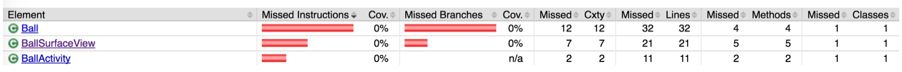
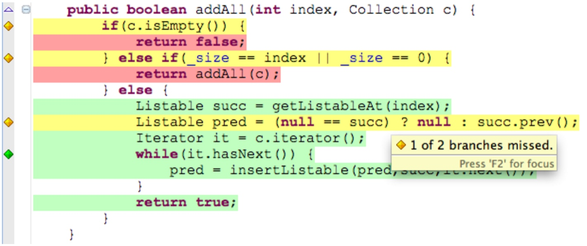

Jacoco报告

- Instructions: Java 字节指令的覆盖率。执行的最小单位，和代码的格式无关。
- Branches: 分支覆盖率。注意，异常处理不算做分支。
- Cxty(Cyclomatic Complexity): 圈复杂度, Jacoco 会为每一个非抽象方法计算圈复杂度，并为类，包以及组（groups）计算复杂度。圈复杂度简单的说就是为了覆盖所有路径，所需要执行单元测试数量，圈复杂度大说明程序代码可能质量低且难于测试和维护。
- Lines: 行覆盖率，只要本行有一条指令被执行，则本行则被标记为被执行。
- Methods: 方法覆盖率，任何非抽象的方法，只要有一条指令被执行，则该方法被计为被执行。
- Classes: 类覆盖率，所有类，包括接口，只要其中有一个方法被执行，则标记为被执行。注意：构造函数和静态初始化块也算作方法。
源码覆盖标记

钻石代表分支覆盖情况
- 红色钻石：这一行没有分支被执行
- 黄色钻石：这一行中只有部分分支被执行
- 绿色钻石：这一行的所有分支都被执行
背景颜色代表指令覆盖率
- 红色背景：这一行并没有任何指令被执行
- 黄色背景：这一行的部分指令被执行
- 绿色背景：这一行的所有指令都被执行了
引用
- http://www.eclemma.org/jacoco/trunk/doc/counters.html
- http://gold.xitu.io/entry/57b2cea7a341310060feb804
- http://www.eclemma.org/userdoc/annotations.html
- 圈复杂度：http://www.cnblogs.com/makemelaugh/archive/2010/06/06/1752832.html